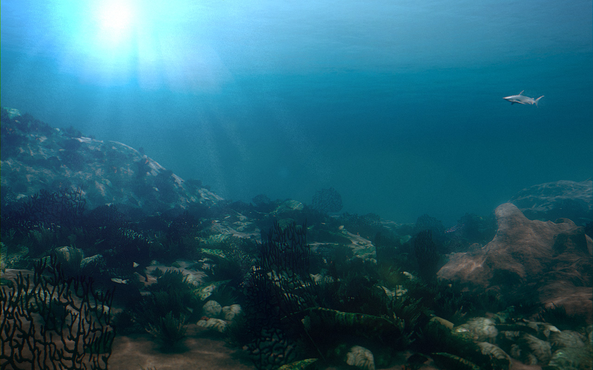

OceanViz
This personal project started one evening when I had nothing else better to do. So I opened up the 3D application Blender and started tinkering with the particle system aimlessly. A short while later this emerged:
 It's nothing to write home about. But I mused at the fact that the image consists of only a particle system on the default cube. Which lead me to pounder, how far one can I push Blender using only a single cube object? And so the Default Cube Experiment was born.
It's nothing to write home about. But I mused at the fact that the image consists of only a particle system on the default cube. Which lead me to pounder, how far one can I push Blender using only a single cube object? And so the Default Cube Experiment was born.

Not Allowed:
- More than 1 cube object
- Any modelling (including sculpting) of the cube
- Curves, Surfaces, Metaball and Text when used as on-screen geometry
Allowed:
- Any number of Empty, Lattice, Light, Camera, Group, Material, Texture and Nodes. Modifier stack, particles and simulation are allowed and encouraged.
- Weight painting is the exception to the ‘No editing of base mesh’ rule and is allowed.
- Curves when they are not being used directly as visible geometry.
- Post-processing as the modifications do not introduce any significantly new visual element.
At the time, I haven't actually produced any artwork in a while (I had been mostly on coding duty). The idea is to crank out one these each day continously for a few weeks to get the creative juice flowing again. I was very glad I did.

The above image from Day 5 shows I was still being mentally constrained to the particle system.
The spinning top below was a joy to model and render. I really liked the ease of setting up a photorealistic scene in Cycles. Because of the one cube rule, modelling the scene required some clever hacks. The floor that the top spins on is actually the tip of an instanced copy of the top, enlarged by 100x.

Day 12 below. I was getting more creative with the mesh modifiers. Being able to iterate this quickly on a workstation with a fast GPU allowed me to setup the material and lighting extremely fast. Without the GTX770, this image probably wouldn't have turned out the way it did. Hmm, maybe constraints doens't lead to creativity after all.

For most of these images, I would start off without much idea of what I want, I would just mess with things until something likable emerges, then spend time refinining it.